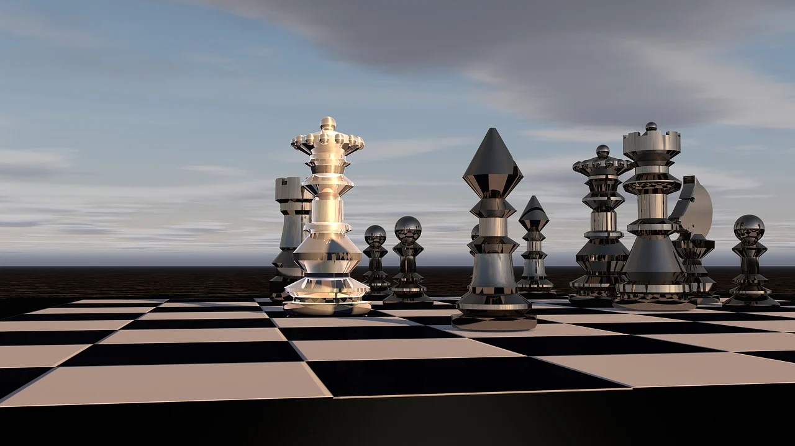

Carlsen won the Chess Oscars from 2009 to 2013. The Chess Oscar, organised by the Russian chess magazine 64, was awarded to the year's best player according to a worldwide poll of leading chess critics, writers,
and journalists, but it was no longer awarded after 2013, as 64 ceased publication.[452][453]

In August 2022, Chess.com finalised an offer of acquisition for Play Magnus Group, which officially closed on 16 December 2022.
As part of the acquisition, Carlsen signed as a brand ambassador for Chess.com.[527][528][529]
Svensen, Tarjei J. (16 February 2024).
"The 7 Most Mindblowing Magnus Carlsen Records". Chess.com. Retrieved 16 February 2024.
Aimee Lewis (15 January 2020). "Magnus Carlsen breaks record for longest unbeaten run in chess". CNN.
Archived from the original on 28 October 2020. Retrieved 10 September 2020.
"Longest unbeaten streak in professional chess". Guinness World Records.
9 October 2020. Archived from the original on 6 September 2023. Retrieved 6 September 2023.
Barden, Leonard (30 December 2022). "Chess: Magnus Carlsen captures double world crown in Rapid and Blitz".
amp-theguardian-com.cdn.ampproject.org. Archived from the original on 20 May 2023. Retrieved 30 December 2022.
Lourim, Jake (26 July 2022). "Magnus Carlsen Is Giving Up The World Title. But The Carlsen Era Lives On". FiveThirtyEight.
Archived from the original on 26 July 2022. Retrieved 12 September 2022.